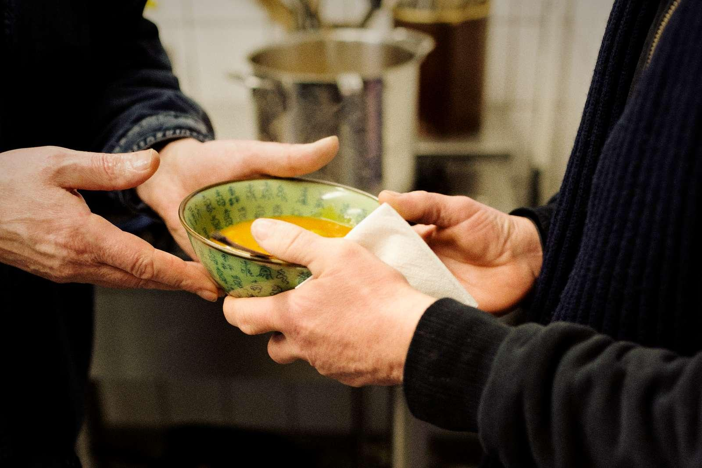

Om Kirksens Korshær
Hjemløse, fattige og ensomme mennesker kan få hjælp på Kirkens Korshærs væresteder.

Kirkens Korshær er en hjælpeorganisation, der med udgangspunkt i folkekirkelige værdier
udfører socialt arbejde i Danmark. Siden 1912 har vi hjulpet socialt udsatte mennesker i
Danmark – hjemløse, misbrugere, psykisk syge, ensomme, fattige. Kirkens Korshærs arbejde udvikler sig hele tiden,
så vi kan være dér, hvor nøden er størst. Derfor er forskellige tiltag kommet til siden 1912, alt efter hvordan
samfundet har udviklet sig. For tiden bliver der f.eks. større og større behov for vores tilbud til fattige og udsatte børnefamilier.